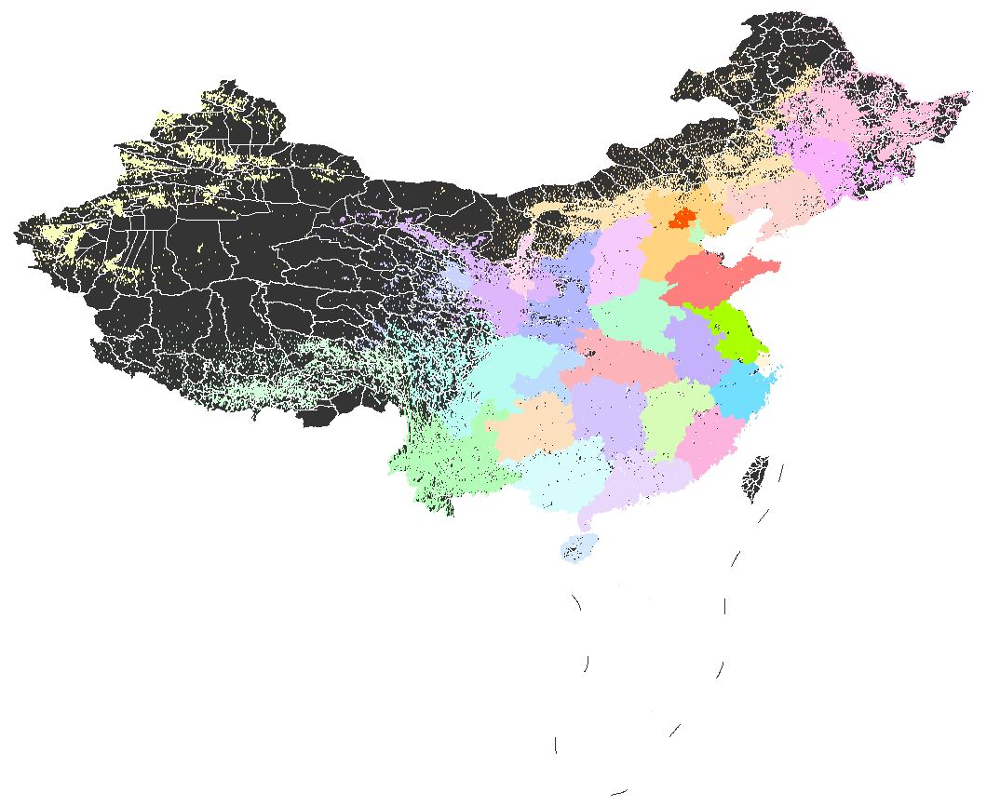
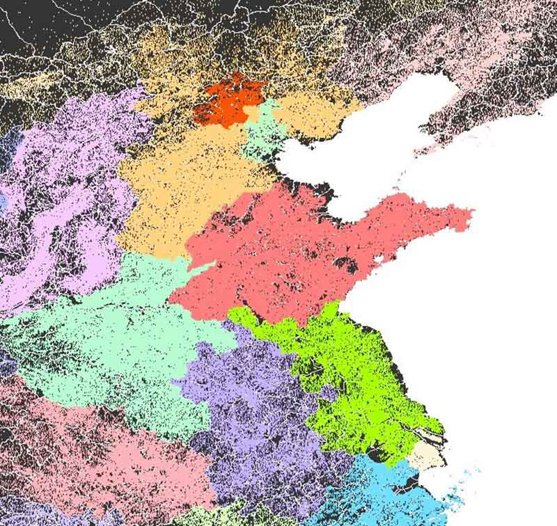
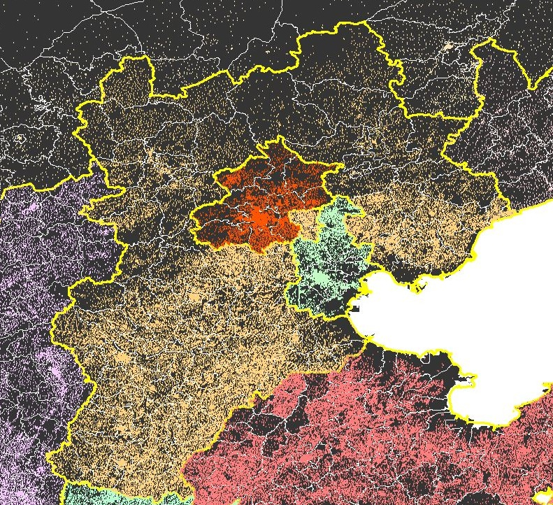
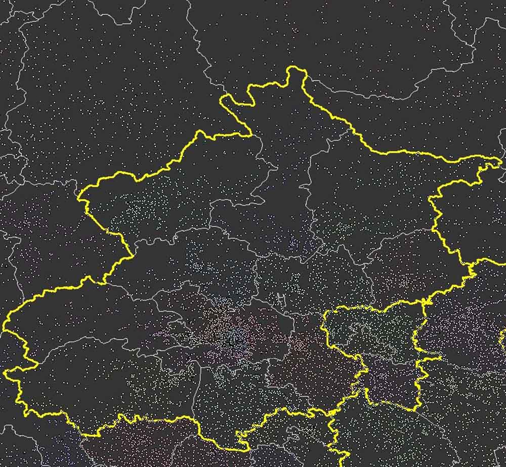
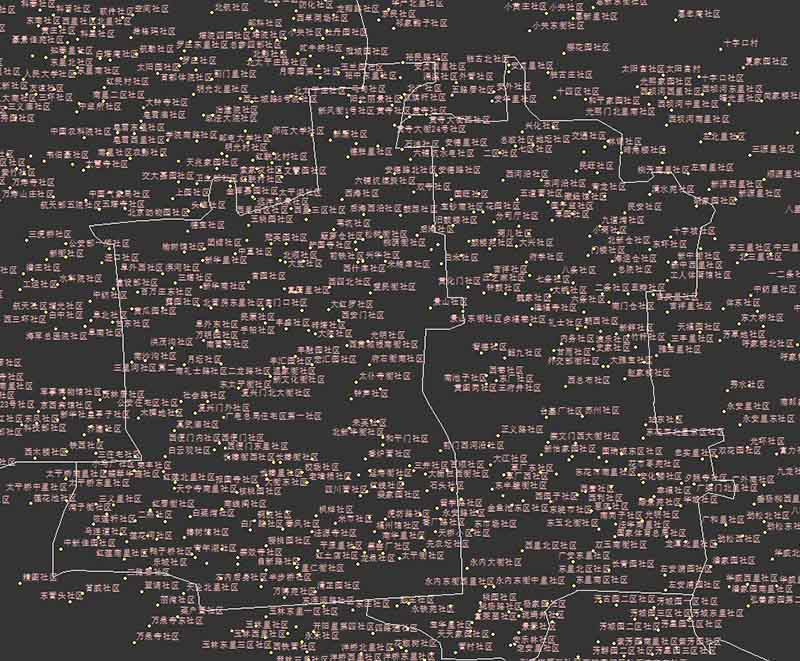
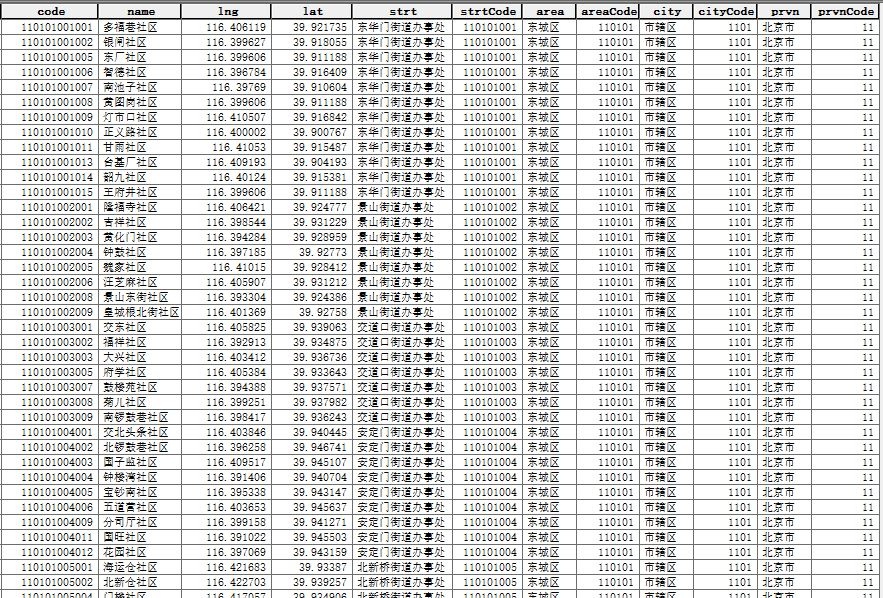

全国行政区划五级联动及村级居民点数据（更新至2019年）
Spatial distribution data of administrative villages in China
数据介绍
中华人民共和国行政区划：省级（省份直辖市自治区）、 地级（城市）、 县级（区县）、 乡级（乡镇街道）、 村级（村委会居委会），五级联动地址文本数据，以及村级居民点空间分布矢量点数据。
数据来源于民政部、国家统计局等官方网站（中华人民共和国民政部-中华人民共和国行政区划代码、中华人民共和国国家统计局-统计用区划和城乡划分代码）发布的相关信息，整理成格式化文本数据，然后通过地理编码等处理，制作形成空间分布矢量点数据。
感谢modood (Github: modood/Administrative-divisions-of-China)的数据整理和校验工作！
数据属性
空间范围：全国
时间范围：2017|2018|2019
空间分辨率：---
数据类型：矢量|ESRI shapefile point；文本|csv
投影坐标：GCS WGS 84
补充说明
中国农村有两种：自然村与行政村。自然村是指中国农村地区的自然聚落，北方平原地区的自然村通常比较大，南方丘陵水网地区的自然村通常比较小,自然村无行政代码。行政村是中国行政区划体系中最基层的一级，设有村民委员会或村公所等权力机构,行政村有行政代码。在许多地方，行政村与自然村是重叠的；在另外一些地方，一个行政村包括几个到几十个自然村；在个别的地方，一个自然村划分为一个以上的行政村。自然村总量（约260万）多于行政村（约70万）。本博客中的农村居民点数据属于行政村，不包括自然村。
数据示例图
| 全国范围 | 华北地区 |
|  |  |
| 京津冀地区 | 北京地区 |
|  |  |
| 乡镇街道 | 部分属性 |
|  |  |
数据下载
行政区划数据（五级）和空间分布矢量点数据，其中村级数据分各省下载
由国家官方网站发布信息整理的行政区划文本数据可供免费下载，该数据不含空间分布信息。
村级数据列表
| 代码 | 省份 | 数据类型 | 数据下载 2017 | 2018 | 2019 | (持续更新......) |
|---|
以下为交换共享数据，全国各省村级居民点矢量数据
空间分布矢量点数据为“交换共享”数据，不提供直接数据下载链接，如果有需要可以联系邮箱 gispie@163.com（或新浪微博私信@斩之浪），获取下载口令~
数据获取流程可参考本站数据共享说明
全国各省村级居民点矢量数据列表
| 代码 | 省份 | 示例图 | 年份(选择) | 共享口令 | 下载 |
|---|
建议使用Google浏览器，IE内核浏览器可能不正常显示下载按钮等！
Fighting, GISer!
最新博文